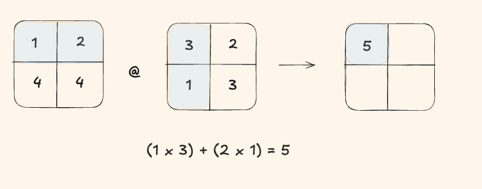
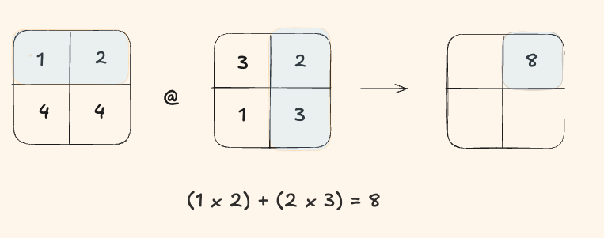

General Matrix Multiply (GEMM) is the core operation of neural networks. Whether you're running a large language model or a vision transformer, almost everything eventually reduces to matrix multiplication.
At its core, GEMM computes each output element as a dot product:
In this post, I'll walk through GEMM in C++ starting from a naive implementation and gradually building optimized versions.
What exactly are FLOPs?
FLOPs stands for Floating Point Operations. It's simply a count of how many arithmetic operations (mainly multiplications and additions) are required to perform a computation.
FLOPs don't tell you everything about performance, but they give a very useful baseline for understanding why matrix multiplication scales the way it does.
Alright, let's take a 2x2 matrix and try to calculate FLOPS by hand.
Step 1
To compute the first output element, we performed:
- 2 multiplications
- 1 addition
That's a total of 3 FLOPs for a single output element.
Okay one more, just to be sure.
Step 2
We again did 2 multiplies + 1 add = 3 FLOPs.
Since a 2x2 output matrix has 4 elements:
Total FLOPs = 4 × 3 = 12
For an \(N \times N\) matrix multiplication:
- Output matrix has \(N^2\) elements
- Each element performs \(N\) multiplications
- Each element performs \(N - 1\) additions
- Total operations per element: \(N + (N - 1) \approx 2N\)